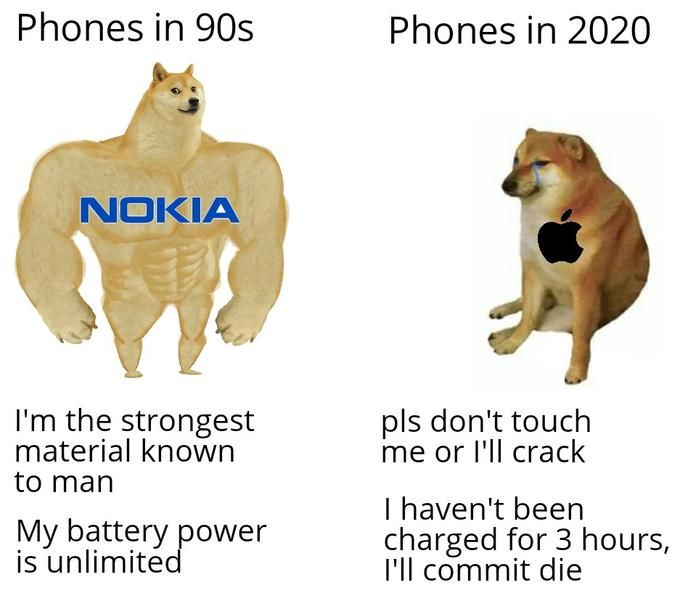
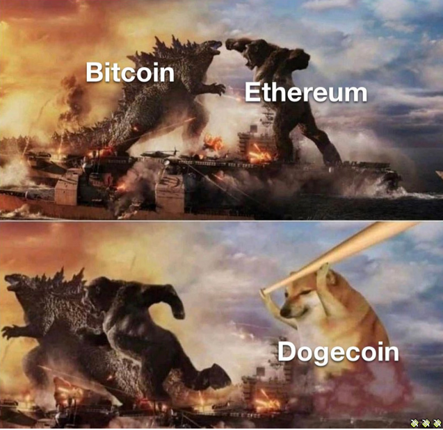
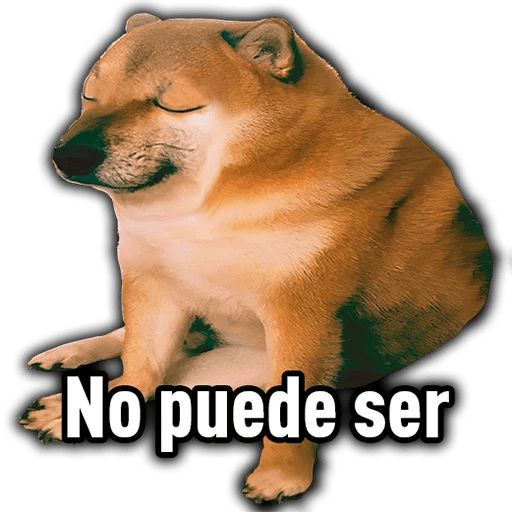

Please Note: The following text is comprehensive and detailed, designed to provide you with a clear understanding of why Cheems transcends the typical 'meme coin' category. If this information feels a bit dense or your brain is fried by TikTok's rapid-fire content, feel free to click here for a more straightforward explanation.
Authentic, bold, and undeniably iconic. Cheems isn't just another cute face, it's the first memecoin inspired by a real meme, on Solana.
Who is Cheems?
.jpg)
Cheems is an internet phenomenon that originated from a photo of a Shiba Inu named Balltze, first posted on Instagram in 2017. The meme character Cheems, known for humorously inserting the letter "m" into words, was popularized in the r/dogelore subreddit on Reddit in June 2019. Cheems quickly became iconic for his "cheemsburgers" and his unique speech pattern.
The meme's influence grew significantly during the COVID-19 pandemic with the viral "Swole Doge vs Cheems" meme, highlighting societal changes over time in a comedic light. Cheems represented the current, lesser state in these comparisons, contrasting with a more formidable past represented by a muscular Doge.
Cheems also starred in a humorous meme involving Godzilla and King Kong, where he, armed with a baseball bat, represents a winning third concept in a battle of competing ideas. Another popular meme depicted Cheems hitting another dog with a bat accompanied by the onomatopoeia "bonk," commonly used online to humorously police overly sexual comments.
This particular meme gained international attention when it was noted by journalist Caleb Quinley during the protests against the 2021 Myanmar coup d'état (country in Southeast Asia).
In Spanish-speaking regions, Cheems resonated deeply, known for phrases like "no puede ser" and "me da ansiedad." Spain’s public broadcaster RTVE recognized the cultural impact of Cheems, stating that "a meme is worth more than a thousand words."
Real Memes Matter for Memecoins
Real memes like Cheems, Doge, and Pepe are crucial for memecoins because they are authentically embedded in internet culture, boasting genuine humor and widespread appeal. These memes have proven their longevity and ability to resonate across both traditional and blockchain-based internet platforms, making them powerful tools for building community and shared experiences.
In contrast, memes created artificially, often with venture capital backing in the Web3 space, lack this authenticity. These manufactured memes typically do not understand or reflect true internet culture, resulting in content that feels forced and often isn't funny. The creators, usually more focused on financial gains than cultural impact, fail to foster the organic connections that drive meme longevity and relevance.
Memecoins associated with real memes benefit from a solid foundation of recognition and emotional connection, which can significantly enhance user engagement and loyalty. These coins are seen as part of a broader cultural phenomenon rather than just a speculative asset, which is why they tend to maintain their value and relevance in the community.
$CHEEMS as a Case Study:
Launched on May 12, 2021, $CHEEMS was one of the earliest memecoins on the Solana blockchain, and it truly stands out as the first real memecoin on Solana. Unlike other early entries based on forgettable animal themes, $CHEEMS leverages a meme that virtually everyone on the internet has seen at some point. This use of the Cheems meme not only offers familiarity and enjoyment but also adds significant historical value.
This pioneering status of $CHEEMS is crucial in the crypto world, where being the first of its kind can significantly enhance a token's significance, especially in a market flooded with new memecoins daily. Historical value in cryptocurrency, as seen in assets like CryptoPunks, is immutable and highly valued. The early introduction of $CHEEMS on Solana capitalized on this aspect, marking it as a landmark in memecoin history.